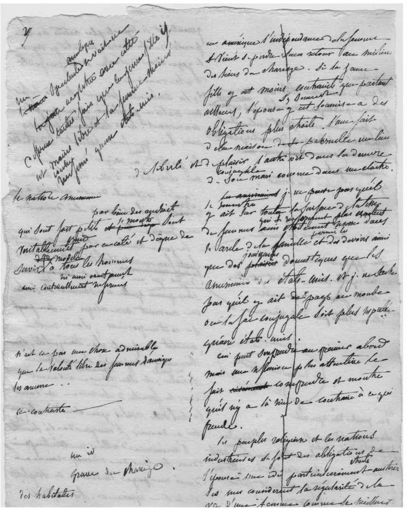

民主制度的最大危险来自民主制度本身。为了看清这一点，我们必须回过头，看看《论美国的民主》两卷之间最引人注目的区别。在上卷讨论了人民主权之后，托克维尔的观点在下卷中显然有所转变。他不再谈论人民主权，而是提到了一种新的“个人主义”，它颠覆了人民自治的自觉意识，并引介了大政府这一“巨大存在”；他不再谈论多数的暴政，而是描述了由那种政府造成的新的“温和的专制”。这一观点转变的证据是：他在上卷中没有使用“温和的专制”这一措辞，而在下卷中则不再提“多数的暴政”。大体上我们可以这样描述他的转变：起先他认为民主制度的主要危险体现为主动压迫的多数暴政（以奴役黑人为例证），后来则认为其主要危险是一种温和的专制，在这种制度中，多数被动地放弃了专制者特有的固执、浮躁和自大的本质，变成“一群胆怯而又很会干活的牲畜”。
看到托克维尔的观点中出现了这类措辞和含义的变化，某些学者甚至声称，上下两卷讨论的是截然不同的“两种民主制度”，因而将上卷称为《1835年民主》、将下卷称为《1840年民主》已成惯例。这也许有些过分。本书上下两卷出版时间相隔五年，托克维尔当然有时间重新思考。他曾在一封信中承认确有一些差别，上卷谈论得更多的是美国这个民主制度的舞台；而下卷更多的是民主制度本身 ——但这只是讨论重点的变化而非观点的变化。他在下卷开篇的“声明”（Notice）中倒是给出了更权威的解释：“上下两卷相辅相成，合为一部著作的整体。”
托克维尔的这句话明确否认了上下两卷不连贯的看法，称它们只是有些差异，并由读者去注意这种变化，自行判断。他在上卷描述多数的暴政时已经说过，这种暴政最糟糕的是对思想的暴政，而不是对身体的暴政。或许在他的论证中，非形式的民主制度发展成熟，本来就会成为新的民主专制，而不是他的观点发生了彻底转变。
托克维尔在下卷“声明”部分进而说道，他曾在上卷中讨论了法律和关心政治的民情，在下卷中他将要讨论“公民社会”，意指不直接与政治相关的情感、见解和关系。但它们最终还是关乎政治，因此，在下卷的第四部分，他再次讨论起它们对于民主政治的影响。民主制度不仅仅是政体形式和上卷中描述的美国人的社会现状，它还是一种生活方式，是社会存在的目的。下卷论证了民主制度的终点或目标会是个什么样子。托克维尔在这里说出了前文中没有明确说过的话，他既不是民主制度的反对者，也不是它的佞友，因此才会直言不讳。他抨击的主要目标不是民主制度的贵族敌人（他斥之为遗老遗少），而是它那些愚蠢的朋友，相关讨论尤见于下卷第一部分关于民主的知识分子的章节。
前文强调过，托克维尔推介的美国的民主注重实践，是在实践中自学成才的民主，而不是一套空泛的哲学思想。但他在下卷的第一部分却转向了哲学，目的不是考察哲学对民主的影响，而是民主对哲学、对“美国的智识运动”的影响。这是“智识运动”一词较早出现的一处，或许是第一次出现；他用的是单数形式，而不是我们如今常用的复数形式，表示他想看看民主的头脑是如何思考的，以及它是否思考。他曾说民主是“不可抗拒”的，也就是说不能反抗民主，但事实证明，有一群民主的所谓“朋友们”对这个词的理解完全不同。他们认为，人类别无选择，只能屈服于客观的强大力量，这种力量能够决定他们的生死，使他们全无可能朝向民主自由的目标发起主动的、有意识的（“智识的”）运动。
他们是谁？托克维尔写到了他认为有害的两类知识分子：泛神论者和民主历史学家。但在讨论开始之际，他挑选出17世纪的法国哲学家勒内·笛卡尔一人特别作了一番描述。他说，与文明世界的任何其他地方相比，美国人对哲学的关注较少，但所有的美国人在智力思辨时使用的都是同一种方法，那就是依靠个人努力和评判，而这正是笛卡尔的方法。正是在美国，笛卡尔的规诫被“研究得最少，却执行得最好”。美国的民主社会现状既让美国人疏远哲学，又让他们倾向于接纳笛卡尔的原则。在那种状态下，人们既不会坚持传统，也不会接受阶级的观念；他们不认为有谁比自己优越，他们只相信自己。
这么看待笛卡尔有些奇怪，笛卡尔通常不被看作政治哲学家，当然也不是个民主主义者，而托克维尔却宣称笛卡尔是民主“方法”（笛卡尔自己的措辞）的创造者，尽管他本人无意为之。这么看待美国人也很奇怪：说他们受制于一位他们从未读过的法国哲学家，或者生活方式与其观点暗合。笛卡尔最著名的学说是质疑权威，除了他的名字不为美国人所知之外，他本人就是美国的权威。他对于权威的攻讦变成了为个人主权辩护的权威。很难说托克维尔让笛卡尔变得更可笑，还是让他无知的美国思想家同行们显得更荒唐。笛卡尔关于“清晰分明的观念”的哲学被归结为每一个不懂哲学的美国人的笨拙主权，他们居然根本不需要阅读笛卡尔的著作就能了解他最核心的思想。而美国人不无荒谬地在人民中间树立了一个权威，如果他们真的追随笛卡尔的教义的话，这个民族应该是充满怀疑的。如此庸俗而矛盾，这到底是什么样的智识运动？
为解释清楚民主的头脑，托克维尔深入思考了人类生存状态的本质。与本能或自发的活动相反，所有的智识运动都要求人自己动脑进行判断。自己动脑意味着怀疑现有知识的权威性。然而如果说思考的目的是行动，人就必须压抑自己的疑虑。谁也没有时间或能力自己把一切想得彻底通透，如果没有共同行动和共识，也没有哪个社会能够存续。就连哲学家也需要作假设，因为没有谁能一下子把一切都想个明白。
托克维尔从对权威的需要轻易过渡到对信仰的需要，因为社会和个人都必须接受信仰的“初始基础”，信仰实际上是一种奴役，但却是一种必要的“有益的奴役”。笛卡尔和复制了笛卡尔哲学的民主社会现状都夸大了人类理性的力量。理性不能代替权威，构建起个体的自治。人类的理性所能做到的不过是把贵族制的权威转变为民主制的权威 ——但它的确能做到这一点。人不是像霍布斯和洛克设想的那样，最初生存在毫无权威的状态中，天生便“绝对自由”。民主制度并非产生于没有权威的自然状态，而是由否定任何高于自身的人或阶级之权威的民主主义者们创造出来的。在这个过程中，每个人都体会到了与他人平等的自豪。而与此同时，在所有其他个体组成的“大整体”面前，每个人也都深切感受到自身的虚弱和卑微。因此，民主的权威对于头脑有两种相反的效果：它否定传统和风俗，给头脑带来新的思想，与此同时，又诱使头脑面对舆论时放弃思考。
托克维尔从对信仰的需要得出结论：民主的头脑喜欢归纳。他认为这是个弱点。上帝能够同时看到万事万物的异同之处而无须归纳，但人却需要将相似的事物集合为同类以便思考。比起他们的“英国祖先”，美国人更喜欢笼统的观念，那些“英国祖先”是美国远在英格兰的贵族制往昔，与反对英国贵族制度的清教徒们的民主起源截然不同。贵族天生厌恶共性，偏爱一次只考察一个或少数几个人，但民主主义者则培养出一种懒惰的对共性的热爱，因为他们的出发点就是这样一个明显的事实：周围的每一个人都差不多一样——那些人和自己没什么两样，都是相似者。民主的平等产生了轻率归纳的思考习惯和对深刻见解的恐惧。这个民主的弱点促使托克维尔重新讨论了宗教。在上卷中，他考察了宗教对民主制度的促进作用，表明了宗教如何“教导美国人掌握行使自由的技巧”。在下卷中，他转向了宗教的真相。
宗教让美国人从怀疑中解脱出来，这有助于他们用头脑思考。笛卡尔的哲学强调了怀疑的必要性，特别是对宗教的怀疑，但在托克维尔看来，宗教把民主的人们从怀疑产生的一片死寂和麻痹中解救了出来。人需要“对上帝、对自己的灵魂乃至对他们对造物主和自己的同类应负哪些一般义务，都形成一种确定不移的观念”，因为如果没有这些，他们就只能听天由命，任凭生活混乱失序而无能为力了。宗教是“对人的心智的有益的束缚”，即使宗教不能使人在来世得报，它也可以帮助他们在今世得到幸福和变得高尚。它为那些最重大的问题提供了答案，如果没有这些问题，缺乏独立思考能力的人将会沦为不事思考的懦夫。
笛卡尔或者任何哲学家都会说，跟信仰相比，怀疑能体现出更大的自觉和自由。在读柏拉图时，看到苏格拉底所说的大多数人都被囚禁其中的洞穴，我们大概就不会觉得托克维尔所谓“有益的束缚”那么讨喜了。但托克维尔的观点正好相反，他认为对大多数人而言，怀疑会让他们变得因循苟且，因为怀疑本身就是在质疑事物发生的规律性或可预测性。如果人们认为天命支配人事，他们就会听任万事顺其自然而不以理性、自由的行动来进行干预。宗教则向我们保证一切并非全凭机遇，并让我们坚信，人类的意愿可以实现，人类的行为是有意义的。
有人可能会提出异议，理由是这样仍然是在以其功用来评判宗教对心智的影响；但我们可以这样来回应这种质疑：如今用来评判宗教的乃是人的头脑指导行动的功用。宗教之所以有利于民主制度，是因为它启迪了与物质享乐相反的本能，还因为在这个过程中，它教会了人们对他人承担义务。在这两个方面，宗教都是自由所必需的。托克维尔说，他日益坚信“［人］要是没有信仰，就必然受人奴役；而要想有自由，就必须信奉宗教”。考虑到旧的自由主义对信仰的敌意，这的确是一种“新式自由主义”。他把宗教看作哲学的公共形象，是哲学的朋友而不是敌人，它保证哲学不致造成无意的伤害——如果不加以干涉，哲学的确可能造成无意的伤害。
泛神论是一种宗教哲学，像斯宾诺莎哲学体系一样，它是一种将上帝和宇宙、造物主和万物全都包含进一个单一整体中的“哲学体系”。就是说，上帝造物是别无选择，上帝同时是造物的因和果。也就是说，人既无法被其头脑所指令，也无法像清教徒那样成为初始动因，也不比非人类的大自然更加自由。泛神论不仅是民主思想的一种表达方式，就像一个笼统的观念抹杀了自然界的一切区别，否认人类在自然界拥有任何特殊地位；它也是对民主思想或有关思想的任何概念的攻击，因为它否认人类能够通过思考或思之而后行而成为万物之灵。
泛神论是科学客观性在逻辑上的极致——它并没有偏爱人类——并且说来也怪，它也是民主平等的极致：整个宇宙都是民主的。
而在这一小段关于泛神论的重要讨论之后，托克维尔立即提出了进步的概念，他称之为“无限完善”。它与泛神论有什么关系？进步是民主思想主要的积极信念，尽管它也保持着怀疑的姿态和盲目的听天由命的倾向。进步看来是有意识地改善现状使之变得更好，它似乎是托克维尔考察的“智识运动”的一个主要例证。这样一来，进步就是人类特有的能力，能够把人和其他动物及万事万物区别开来。造物因此而不再是泛神论所断言的“单一整体”，而是一个复杂的整体，其中包括一种不同于其他万物的生物，它能够改变和重新创造，即获得进步。进步的观念与泛神论相悖，不过两者都是民主思想的表达方式。泛神论想要对一切差异和区别一概而论，但进步的观念则认定民主的人应该格外看待，为的恰恰是对那个将事物一概而论为泛神论的民主思想表示尊重。民主主义者认为，实际上，一切从本质上都是平等的，但提出这一主张的民主主义者除外。
在进步观念的内部也存在这种矛盾。托克维尔说，平等向美国人暗示了人可以无限完善的观念。平等只是建议但并未迫使民主主义者相信进步，因为强迫会贬损人类创造、构想以及发扬更好的生存或行事方式的尊严。民主的进步为何是无限的？贵族制度中也有进步，但那是有限的；它是朝向完善的改进，或是在“一定的不可逾越的界限之内”的进步。进步无法超越完善，而且由于人类是不完善的，进步充其量不过是接近完善。
民主制度追求的不是完善，而另有其事：“一个理想的但又总是转瞬即逝的完善的形象”，一个只能渺茫地瞥见终点的“伟大目标”。他们不知道完善是什么，但也不否认完善的存在。他们没有哲学修养，因为他们否认自身之外的任何逻辑或真理，但与此同时，他们又遵循着无限完善的“哲学理论”，这种理论承认精神可以支配物质，但把进步的能力归功于每一个人和每一个时代。托克维尔讲了一个美国船员的趣闻，此人解释说他们国家的船之所以不耐用，是技术进步太快，老船很快就不堪再用了。在美国人看来，完美的船根本就不存在，但在某种程度上，虽然不知道何为完美，人们却稀里糊涂地知道，新的就是更好的。
因此，民主的头脑有一个进步的理论，但它轻视关于完善的纯粹理论，而偏爱将理论应用于实践。“平等让每个人有了凡事自行判断的愿望，让他在看待一切事物时都更偏爱真切的实体，而轻视传统和形式。”在民主的永久喧嚣中，人没有闲暇去苦思冥想什么“最纯理论原则”，他们没有什么见解去表达在贵族制中一度被珍视的“人的尊严、力量和伟大”，而他们的头脑又倾向于热爱真理。托克维尔警告说，进步有赖于纯粹理论的发现，但在一味追求进步的社会中不大可能会有这类发现，当然也并非全然不可能。进步来自那些拥有“对真理的无私的爱”的人，而不是热爱进步的人。看来，科学与其说是科学的方法 ——美国人的方法 ——还不如说是对真理的热爱。美国人在其智识运动中并不知道前进的方向，对纯粹科学所必需的“对基本原因的思考”也不怎么看重。“在我们这个时代，应当让人的精神重视理论”，因为民主的头脑偏爱实践，不在意独立、深刻的思考。在《论美国的民主》的这一部分，托克维尔对理论颇有褒赏，虽说这在本书其他地方都不太明显，但从未缺席。在大多数情况下，他只是叙述理论，随后或褒或贬说上几句，但在此处，他索性以民主导师的身份提出了建议。
托克维尔随后注意到，美国人在培养技艺时虽然并非对美视而不见，却更偏爱实用而非美感，并且希望美的事物同时也能有用。但他随后评论了美国人的制造精神，表达了一个不太明显的观点。与贵族时代旨在制造尽可能完美的产品的生产技艺不同，美国人生产的产品基本上都属平庸，但每个人都能够拥有那些产品。这是一种节俭而理性的平庸态度，他们的格言是“够用就行”，而且他们发现，薄利多销可以致富。然而，或许会有人问，如果美国人并不认为既然做了就要做好，那么他们又是如何完善产品的呢？要想提高产品质量，即使平庸的产品也需要用最好的产品作为榜样。托克维尔赞美了拉斐尔的绘画，他似乎认为这位文艺复兴时期的画家是个贵族，因为他的作品让我们“得以瞥见神性”。这样的神性超越了人类的完善，又启发了人类走向完善，这是民主的进步所必需的，但神性又不太可能出现在民主的时代。
在这里，托克维尔提出了在民主制度中伟大存在于何处的问题。在民主制度中，个人是弱小的，但国家或民族是伟大的。私人可以生活在小型居所中，但他们通过公共的纪念性建筑物来想象和表露出对伟大的向往。美国人为自己建造了一座巨大的人造城市（华盛顿特区），在托克维尔的时代，那里的人口不比法国的一个小镇多到哪去，因为民主国家一般会建造很多的小型公共纪念性建筑物和区区几座大型建筑物，不会建造中型建筑物。在民主制度中，伟大是一个体现着宏大想象的工程，在接下来的章节里，托克维尔讨论了各种形式的民主言论，尤其关注其特有的夸张和自大。这些都是民主知识分子自我表达的方式。
在文学界，民主的作家鄙视贵族制度所看重的风格的形式特质。民主的文风艺术性较弱，却更大胆和强烈；不够精深广博，却有着更强的想象力和表现力；他们力图惊世骇俗而非愉悦读者，充满激情而非品位不凡。伟大的作家凤毛麟角，思想贩子却成千上万。古代作家们苛求细节，其作品需要有眼光才能读懂，民主社会已经不再去深入研究他们的作品了，因为这里的教育更注重科学、商业和工业，而不是文学——但托克维尔补充说，这些学科对那些希望在文学上有所建树的民主主义者倒是一种“有益的膳食”。民主的民族的语言反映了他们对动态和创新的渴望，对任何传统和专制的厌恶，以及对抽象的热爱。民主社会的诗歌对古老的和描述理想的一切都有一种本能的厌恶。相反，它展开双臂迎接未来，追求宏大的目标，如全人类的命运。与贵族社会相比，民主社会的演说往往言过其实，民主社会的戏剧则一贯“更为振聋发聩、通俗易懂和贴近生活”。
但在讨论言语的章节结束之后毗连的两章内容则揭示了民主社会知识分子共有的那点可怜的自负：如果人人平等，那么人还有多重要？为了回答这个问题，托克维尔对民主制度和贵族制度进行了特别生动的对比。他说，贵族时代的历史学家让某些人的个别意志和一时兴致来决定所有事件的发展走向，但在民主时代，历史学家一般而言几乎不会将历史归因于任何个人的影响，对于特定历史事实，他们会总结出主要的一般原因。托克维尔承认在民主时代，个人的确作用不大，所以一般原因确实能解释更多的东西，但这种解释很危险，因为它们把个人成败交给了僵化的天意或盲目的命运。它们暗示既然人不能主宰自己的命运，那么人也就不是历史事件的主角，继而就是不自由的。民主时代的历史学家看来是下定决心要证明进步不是人类自觉、自愿实现的目标：“古代的历史学家教导人们自主，现代的历史学家只教导人们如何服从。”
然而这些历史学家本身倒显得很伟大，像是要抛弃他们描述的一般原因，自满地傲视那些没有意识到推动其前进的力量的其他人类。接下来关于美国的议会辩才的一章看似与历史无关，但实际上论述了同样的观点。贵族议会的成员都是贵族，如果无话可说，他们也无须证明什么，甘愿保持沉默。美国的情况则相反，代表都是无名之辈，时常迫于需要而努力争取并显示自己及其选举人的重要地位，滔滔不绝地发表一些脱离实际的高谈阔论。民主时代的代表们总说自己很重要，其在精神上与认为人的力量微不足道的民主时代历史学家相抵触。民主时代的人看来拥有一种对荣誉的渴望，这是一种想要生活在贵族时代、作为大人物而备受拥戴的渴望，而他自己对此一无所知。他那善于归纳的头脑整日忙着证明民主制度的优越，与他那个要证明自己杰出的个人头脑并不合拍。
托克维尔从思想转向“情感”，考察了民主的心灵所特有的感情。其中主要的一种感情是他称之为“个人主义”的无力感。这是个我们如今每天都能听到的词，它有好几个层面的意思，通常用作褒义，比如“吃苦耐劳的个人主义”。托克维尔并不是这个词的首创者，但他却是第一个重视和强调这个词的人。他对这个词的定义不同于“自我中心”或“自私”，那可是被普遍视为道德缺陷的严重自恋。个人主义是一种民主时代的情感，它是反省的、温和的，让每一个公民得以脱离芸芸众生，回归家庭、朋友和自身。这种情感伴随着对平等的热爱，在民主时代这种对平等的热爱总是要比对自由的渴望更加强烈，但究其本身，与其说它是一种激情或一种缺陷，倒不如说是一个错误的评价。那种评价源自民主社会现状，恰恰是泛神论者和民主时代历史学家教导的东西：个人无能为力，需要服从非人性的巨大力量，而公共美德是徒劳无用的。在贵族社会中，等级制度是牢固地连接人与人以及现在与过去的纽带，民主社会则不同，它把所有的人放在同一个层面上，人们抽象而虚弱地把自己的善意延伸到全体人类，但实际上他们只对自己身边的人感兴趣。
美国人没有经历过民主革命，他们的个人主义弱于民主的欧洲各族；用托克维尔的话来说，美国人有巨大的优势，“天生就平等而不是后来才变成平等的”。他们了解自己的个人主义，因而用自由结社和不言而喻的私利这一怪诞的道德教条来与个人主义作“斗争”，这两点他在上卷中都讨论过。社团让人们从个人主义的安逸享乐投入到公共活动中，在促进公益的同时，追求私利、实现抱负。
托克维尔所说的教条还是“不言而喻的私利”。他说，这是美国道德家们为美国人规定的原则，是“一切哲学理论中最符合当代人需要的理论”。它切合人的弱点，通过个人利益来控制个人：“掌握能对激情产生刺激作用的因素，因而能引导激情。”然而不管该原则设计得有多精巧，托克维尔在将民主制度与贵族制度比较之后，仍然表达了他的怀疑态度。在贵族制度下，人们嘴上谈论着美德，私下却在研究它的用处，而在民主制度下，关系反转，美国的道德家们对美德惧而不谈。美德可能需要牺牲，民主道德家们不敢建议人们牺牲，只好引美德存在于私利之中为例，并将其延伸，使之成为一条一般原则。托克维尔没有提到任何美国道德家的姓名，而只引述了蒙田，但说到宣扬不言而喻的私利的美国道德家，最著名的当属本杰明·富兰克林了。富兰克林在《自传》中就示范了如何在出人头地的过程中只是尽力帮助他人，深藏起自己的雄心抱负。
托克维尔在分析中突出了一个微妙的观点，这个观点富兰克林也曾提出，但不是非常醒目。他表示，并不是说在美国，私利需要把自己粉饰为美德——那种虚伪在哪个人类社会都稀松平常，而是在美国，美德需要把自己假托为私利。在民主国家，主张美德就是在众目睽睽之下显示自己比“相似者”强，因而招人嫉恨。托克维尔说，美国人“宁愿将荣耀归于他们的哲学，而非归于他们自己”，也就是说，他们宁愿承认而不是否认自己是为了私利。“将荣耀归于他们的哲学”就意味着让真理生辉。但真理从何而来？显然不是来自个人。私利原则不是来自私利本身，而是来自对于真理的无私追寻。这就是美国人的自相矛盾之处；这其实是在表明他们的行事依据是原则而非利益，不管他们如何否认，这都是在往自己脸上贴金。托克维尔在赞扬美国人践行政治自由时，就与他自己所说的美国人的做法完全相悖：他把荣誉归于美国人，而不是他们的哲学。
不言而喻的私利不但自相矛盾，而且还过于抽象。它暗示了普遍的人类“自我”的存在，这种“自我”永远以同样的方式行事或反应。然而，托克维尔认为，这种据称普遍存在的自我实际上就是民主的灵魂。在讨论不言而喻的私利这一章后面的若干章节中，他再次考察了民主的灵魂所特有的对物质富足的爱好。他的结论是，民主制度产生了一种正当而温和的唯物主义，与其说它会腐蚀灵魂，不如说它会让灵魂变得软弱。美国人的物质生活蒸蒸日上，但他们总是欲求不满且“桀骜难驯”（托克维尔频繁地用到这个词）。他们坚信的“私利”原则无法由人性合理解释，而是由他们生活在其中的民主制度所决定的，并且实际上也并非“不言而喻”。
鉴于美国人典型的桀骜难驯，他们还必须有一些长期的奋斗目标——这就是托克维尔的下一个论题。宗教的任务，是尽可能地把民主主义者从为眼前利益争夺中解放出来，让他们习惯于为未来的某个目标而奋斗。而当民主制度由于热爱物质富足而不再信仰宗教时，这一任务就同时落在了“哲学家和执政者”肩上。必须“尽可能地消除政治世界的随意性”，不是要运用科学方法来预测未来将会发生什么有违人类意愿的事，而是让人们感觉到诚实者的努力终会获得回报。相信机遇主宰世界会让一个民族变得被动而迟钝：或是因为如果你觉得自己不够走运，高尚的牺牲会显得过于冒险；又或是因为你觉得自己足够走运，成功看起来会过于容易。虽说机遇不能也不应该被完全排除在人类生活之外，因为这样做也会把自由一并排除出去，但机遇应该被降低到某种程度，让人们可以理性地相信他们完全能够管好自己的事、支配自己的生活。托克维尔为宗教、哲学和政治三者设定了这样一个单一的指导功能。政府必须教育公民“只有怀有长期愿望，才能获得巨大成功”。思考自己在俗世的未来会让他们不知不觉地恢复对彼世的信仰。虽然美国式的美德被假扮为私利，但只要它持续存在，就可以证明它不是梦想或天降好运，而更是有万事万物的自然秩序作为依据的。如果“伟大的成功”是应得的，那么坚信无限完善的美国信仰就可以摆脱永无休止的焦虑，也可以在恰当的私密范围内得到证实。
然而托克维尔不是一个许诺过多的人，他担心美国的未来会面临一种由实业产生的新的贵族制度。他在这一点上很像卡尔·马克思，预料到因为劳动分工日益细化，限制了工人的视野和能力，民主国家的工人会沦落到只会服从和仰仗他人，把所有规划和思考的事儿都留给工厂主。这种贵族制度会很苛刻无情，因为它把工人看成物件，但它并不危险，因为它不会由某个统治阶级来组织。民主制度 ——托克维尔并未谈及资本主义 ——在本质上就会激发人们更多地变迁和追逐机遇。这正是民主国家转向商业的原因，不仅是为了获利，也是为了乐趣。工业危机蕴藏在民主国家的禀性之中，因而是民主国家所特有的且无法预测。美德终获回报的美国梦时刻要面对商业复杂性的危险，并受到各种意外因素的影响。
托克维尔在讨论中揭示了两种持久的民主情感，并证明他们本质上都是非理性的：对物质富足的喜好和对平等的热爱。前者始终萦绕不去，后者造就了持续的需求，两者都无法得到满足。两者都会让民主国家的个人变得软弱：前者可以让灵魂衰弱无力，后者可以消灭所有的权威，让人们服从正统。然而美国人践行政治自由并将公益和私利集于一身，这表明他们严肃对待自己作为其中一分子的那个整体，而并非仅仅是每个人自成一体。他们用自己的行为驳斥了“个人主义”而丝毫没有意识到自己的美德，或者说没有意识到他们最好还是承认和宣扬自己的美德。托克维尔的建议与他们的道德家相反，意在帮助他们正确理解自己的私利。
托克维尔从思想谈到了情感，继而谈到了民情，每一个话题都是下一个话题的灵感来源 ——民情是由思想所建议、由情感所激励的行为。在这部精彩著作的这一部分，他考察了民主制度如何应对顽固的不平等，后者似乎是自然（这个词频繁出现）要故意与之作对而预设的。在民主制度下，主仆之间的关系是怎样的？男人相对于女人的明显优势又是怎样的？因希冀与众不同而渴望荣誉之人呢？对每一种情况，民主制度都尽其所能地夷平了种种不平等，尽量让它们无伤大雅，让它们显得不那么严苛、不那么跋扈、不那么可憎。民主并没有成功地消灭不平等，但给予了它重重一击，提醒所有人，在与不平等妥协的表象之下，存在着人类平等这一基本事实。与此同时，即使民主致力于平等事业，它仍然以自己的方式证明了这些不平等存在的合理性，因而它似乎承认平等只能到此为止，也承认人类的不平等同样是一个基本事实。
托克维尔还是以他惯常的对比开始讨论，宣称随着社会生活越来越平等，民情也变得比贵族制时代更加温和文雅。他引用了17世纪的贵族塞维涅夫人 [1] 和女儿的通信来证明这一观点，这是全书最令人震惊的段落之一。塞维涅夫人在信中跟女儿闲话家常时，快活地聊到当局镇压了一群纳税人的叛乱，领导叛乱的人被严刑拷打，处以绞刑，余者 ——“一大群倒霉的人” ——被驱离家园。托克维尔对此评论道：“塞维涅夫人对贵族圈子以外的人的苦难一无所知。”谁要是认为托克维尔对贵族制度过于赞同，真应该读读这一段。民主的同情心减弱了民主的私利心，当然属于不言而喻的私利的一部分。但从民主主义者对待奴隶和在战争中对待敌人的方式可以看出，当他们自己没有亲身经历苦难、当他们不把其他人当作“相似者”之时，他们同样会对苦难视而不见。
贵族社会中的主仆永远是不平等的，但在民主社会，这种关系只是暂时的，因为他们只是契约上的不平等，而不是阶级或出身的不平等。因此，贵族的仆人呈现出他主人的个性，他的尊严源自主人，他的态度也同样傲慢，有时更甚。民主时代的仆人没有这种骄傲的奴性倾向；他的尊严存在于他与主人在契约限定之外所共享的平等，在这种情况下，主仆是“两个公民，两个人”。但他们又是哪一种平等——是作为公民的平等，还是作为人的平等？
托克维尔说，尽管在舆论看来两者之间存在着明显的距离，他们的地位却被拉近了，这“在他们之间创造出一种假想的平等”。看来民主制度并不符合自然规律；民主主义者主张的自然的平等需要舆论的推动，舆论断言人生而平等，无论其地位如何。主人和仆人是两个公民，他们只想做两个一般意义上的人，自然的平等本身并不足以保证这一点，还需要旨在实现自然平等的公民契约。民主的平等是可能的，因为民主的舆论说它是可能的。我们经常看到在公民社会，某种政治真理会在关于某种关系的讨论中浮现出来：真正的自由主义理论提出的社会契约使得统治者和服从者之间有了差别，但这种社会契约并非自然状态下的平等个体所达成的共识，而是由公民创造的，舆论宣称那些公民都是彼此平等的人。托克维尔版本的社会契约没有创造社会，而是源自社会，且这种契约并没有假设人性的平等，而是试图维持并在某种程度上建立这种平等。
同样的社会契约政治版，对真正的自由主义版本做出了同样修正的版本，出现在托克维尔关于美国女性的著名论述中。托克维尔以前的自由理论谈及“人权”，指的是抽离性别的人类。在我们的时代，这种理论因为过于抽象，忽视传统的、假托为自然的男女性别不平等而屡遭攻击。托克维尔以前的自由主义者们关于不平等没有什么可说，往往看似认为那是理所当然的。托克维尔纠正了这种轻忽的态度，他用五章的篇幅讨论了美国的女性，高度赞扬她们的美德和善行。他说，没有哪个自由社会可以缺少民情，而女人产生了民情。男人批准法律，但民情比法律更重要。在他看来，有关美国女性的一切都“与政治息息相关”。
问题在于，托克维尔赞扬美国女性远离政治，放弃职业——如今大多数美国女性对此恨之入骨。但我们不该仅仅因为结论令人不快而将推理过程也一起摒除。在关于女性的讨论中，我们可以对托克维尔的新式自由主义有更多的了解。
民主制度对家庭的影响就是摧毁贵族制意义上的父权，这是真正的“父权”，远远超出了我们今天使用这一词语的含义。民主制度使得父亲和子女变得平等，消除了年龄和性别的自然差异，然而其结果却是强化了家庭内部的天然纽带，即使强权消失了也是如此。年轻的女孩摆脱了父亲的保护性控制，学会了自行管理，控制自己的情感，培养自己的判断力；她们很快就不再天真无邪（哲学家可比她们天真多了），而且学会了“应对一切的初步知识”。托克维尔此话令人难忘：“与其说她们有高尚的精神，不如说她们有纯洁的情操。”她们通过观察世界——男人的世界——来获得民情的教育，因而获得了男子的教育，用以取代她们缺失的父权。托克维尔认为，男子气概不单是一种男性品质。
而女人嫁人之后就进入了婚姻，托克维尔尤其强调了婚姻的道德和家庭 “纽带”。他说，在美国，女人与男人的命运完全不同，因此她们必须放弃女孩的轻松自由，在无尽的家务和约束中寻找幸福。但美国女性勇敢地承受婚姻束缚之苦，因为她们自愿选择接受婚姻。托克维尔强调了她们的选择 ——如今我们用这个词来指代一种完全不同的女性生活，她们不但可以离开家庭追求事业或寻找工作，而且受到邀请和鼓励这样做。在托克维尔看来，选择并不是要逃离女人的独特命运，而是选择做谁的妻子并与他共同生活；女人在大多数情况下都会结婚，但她可以选择丈夫，而不必接受父亲为她选择的对象。托克维尔在这里描述了一种我们如今视为理所当然的选择，让我们知道，自由选择需要明智的头脑。因为当时离婚很罕见，女人不能自由地犯错和改正；她必须谨慎和负责。男人不必因为被某个女人吸引而选择她作为妻子，但婚姻是女人的选择：或许直到今天，我们仍然能够看到男女对待婚姻的方式存在着这种差异。
为了做出选择，走进婚姻生活，女人可以自由地运用自己的理智并借助于宗教；托克维尔在讨论女性时，跟全书其他各处一样，理性和宗教始终协力合作。他在上卷中曾说过，宗教像君主一般统治着女性的灵魂，但他在这里又说，理性也有着同样的支配权。部分由于新教在美国的影响，部分由于妇女所受的世俗教育，那里的宗教没有把妇女禁锢在依赖父亲、丈夫和神职人员的盲目轻信状态。美国的妇女尽管生活在婚姻的“羁绊”中，她们却是独立的，通过选择和理性，而不是服从于宗教权威，践行了托克维尔所谓的“美德”，也就是如今所谓的“家庭观念”。

图7 托克维尔《论美国的民主》原书手稿中的一页。这一页的内容是关于美国女性的讨论，出自下卷中题为“年轻女孩怎样习得为妻之道”的一章
在美国，妇女认为婚姻需要一个首领，而“夫妻这个小团体的天然首领就是丈夫” 。那里的“妇德最好的女人”以“自愿放弃自己的意志”（她们是这么说的）为荣，并因此受到尊重，而在欧洲，妇女虽然拥有更多的权力（甚至把持着一个“专制帝国”），却被看作必须引诱男人才能得到想要的东西的软弱生物。这种“重大的男女不平等”至今似乎一直“是以自然法则为永恒基础的”，托克维尔并没有挑战这种不平等。他只是赞同这种不平等在美国的表现形式——或者说是他声称他在美国看到的表现形式——并掷地有声地说：“要是有人问我在我看来这个国家的惊人繁荣和国力蒸蒸日上主要应当归功于什么，我将回答说：应当归功于它的妇女如此优秀。”这是怎样的赞美！他没有说美国的妇女是优于其他国家的妇女还是优于美国的男人；也许比后两者都优秀。
如今的美国妇女，只要她们还渴望事业有成，渴望自身地位有所提高，则无疑乐于摒绝托克维尔对其美德的赞扬，从某种意义上说，这种美德现在几乎绝迹了。但我们不应忽视其哲学意义。民主制度主张人民主权，我们已经看到，它需要人拥有主权。然而人无法摆脱必然或命运，人的主权要求人的选择显得能够适应那些看似可能会限制或奴役人的外部力量。托克维尔描绘了一幅优美的甚或有些夸张的场景——与其说它是真实场景，不如说应该如此——来赋予美国妇女一项任务，即选择有尊严地接受必然。他反对自由主义理论的社会契约，认为它忽视了人们群居的必然性，企图让它看似一种选择，仿佛人能够做出任何自由选择一样。作为社会契约的替代品，托克维尔提出了婚姻契约，并以美国妇女的言行为例，说明婚姻契约是如何起作用的。
在他关于民主的杰作的结尾，托克维尔揭示了民主制度所天然倾向的政治之恶，这是他在书中反复表达的他最担心的情况，即民主的平等会压倒民主的自由。在这里，他称这种恶为“温和的专制”；在别处，他称之为民主的专制或行政专制。这是一种魅惑而非胁迫的恶，它柔软、被动，甚至会显得仁慈；它替代了多数暴政（上卷）而成为托克维尔最害怕的东西，后者是严苛的、压迫性的，以奴役的形式出现。从他在本书上卷对舆论的暧昧权力的描述中，我们就已经看到了温和专制的萌芽，但在下卷中，我们看到它具体表现在集权的民主国家中。
温和的专制并非不可避免，在民主制度下也并非没有遭到反对。人性中就存在着与它对抗的力量，在本书最后一部分的开篇，托克维尔论证了平等天然地让人们更加爱好自由的制度而非专制。他说，平等让人们彼此独立，因而怀疑权威，倾向于不遵循任何人的意愿而坚持自己的主张。平等启迪了某种倔强任性，某种固执的“别想爬到我头上来”的态度，它让人想起柏拉图所说的灵魂中意气风发的那个部分（血性），也有益于民主制度对自由的坚持。倔强任性看起来或许与美国人的结社倾向相悖，事实上也的确会如此，但当人们看到完成某一项使命是有用和有尊严的，其消极拒绝合作的态度就能转变为可靠负责的态度。今天的人们或许会说，美国人普遍对权威持敌对的态度，如此便难以管理，而在特定的场合，他们也会有着一种相反的“可为”（can do）的精神。
虽说人性的难以驾驭使得任何政府的管理都不容易，民主制度却有着天然的反方向的倾向，会让治理变得更容易、更愉悦。托克维尔的《论美国的民主》最后一部分的主题，就是他担心人们会丧失那种对于自由制度的偏爱。我们知道，民主主义者欣然成为个人主义的牺牲品，这是一种让人丧失活力的软弱感，把公民变成只关心个人生活的孤立的个体。当他们这样做时，只剩下国家作为公众唯一可见的永久代表，而个人一旦培养出让国家处理一切公共事务的天然倾向，也就脱离了社团。作为彼此平等的人，他们本能地倾向于骄傲和独立，但作为个体，他们却必须忍受独立带来的软弱感和孤立感。因此，他们厌恶本地的政治和社会活动，无动于衷地服从国家的“强大存在”（托克维尔曾在前文中用这个词来形容泛神论的神灵）。
尽管每一个民主的民族都倾向于依赖国家，但国家本身则热爱平等，并尽其所能地扩大平等的范围。现代国家源自欧洲的君主政体，它们奉行与人民结盟反对贵族的政策，逐渐把人民从贵族政府中移除，转向国家的中央集权。法国大革命期间，民主制度取代了君主制度，国家一如往常，继续独揽一切行政大权，它对社团产生了新的敌意，取代了君主对贵族的嫉妒。因此，集权国家热爱其民主公民所热爱的平等，并恨其所恨；两者互相配合补充。国家不断巩固权力；人民持续失去权力。
如此一来，民主国家不得不害怕的专制就是那种温和的专制。这种专制远没有让它们的期望落空，而是让最糟的期望变成了现实。民主制度中最糟的期望是放弃让人保持独立的骄傲和丧失自由，从而无须启用酷刑、无须挑起人们的反对，甚至让人们对自己失去的东西毫无察觉，便可降低其地位。人民变成“无数相似和平等的人……整日汲汲于小小的庸俗的享乐，用它们填充灵魂”。每个人都“离群索居”，“独自生存且只为自己而生存”。在这样的一群人之上“耸立着一个权力极大的监护性当局”，像校长或监护人一样对他们负责，不让他们——托克维尔极尽嘲讽地说——“开动脑筋和操劳生计”。远在尼采之前，托克维尔便称他们是“一群胆怯而又很会干活的牲畜，而政府就是那牧羊人”。
在这种情况下，一个民主的民族会觉得它既需要自由，也需要有人引导，还自我安慰说，引导他们的是他们自己选出的领袖。他们在参加选举时暂时放弃了从属性，其后便又回到这个状态。“这对我可不够” ，托克维尔以自己的名义自豪地说。
托克维尔承认，某些意外的事实会增强或减弱政府中央集权的推动力——例如，美国没有发生过民主革命。因为美国不必发动一场反对贵族制度的民主革命——生而如此，不必后天努力——就能够更自由地借鉴贵族制度来支持自己的自由。托克维尔在全书临近结束时，提到了民主的各民族需要警惕的平等的三个特点。首先是已经讨论过的形式的作用，民主国家并不完全理解这一点，还对其不无鄙视。第二个民主的本能同样是与生俱来并且据称非常危险，那就是对个人的权利不屑，为社会的利益和权力而牺牲个人权利。作为一个自由主义者，托克维尔说，“自由和人之伟大的真正友人们”必须时刻警惕，确保个人权利不致轻易被献祭给社会的总体设计。这样做实际上对社会有害，因为它质疑了权利的支持者才是社会存在的基础。
与这两个担心相关，托克维尔又提到了他对民主社会中的革命的关注，这种关注或许更是针对欧洲而非美国。既然民主制度热爱变化，革命就可能变成一种习惯，甚至在政府政策中被合法化。他并不否认革命有时是真诚而正当的，但他认为在民主时代，革命是一种特别危险的疗法。他此前谈到过为什么大规模革命——例如反对民主的革命——会越来越少，说比起民主国家中日益盛行的中产阶级暴动，他更担心那里会陷入一片死寂。但民主国家的死寂与庸众的野心和争夺物质享乐这种普遍存在的低层次骚动并不矛盾。
如何来矫正民主的个人主义、民主的庸众和民主的冷漠？在上文引用的托克维尔特别尊称的那个称谓中，这个问题的答案呼之欲出：“自由和人之伟大的真正友人们”。这是自由和人之伟大的携手合作。起初，人们会想到在一个经典的混合政体中把民主的自由与贵族制度的伟大混合在一起。但《论美国的民主》一书从头到尾，特别是在结尾，托克维尔一直主张民主制度应该保持下去，没有可能“重建贵族社会”，人们必须表现出自己是平等的朋友，并将纯粹的民主制度作为“第一原则和信念”。所以他在此处没有诉诸伟人，没有以“少数人的伟大”来启迪民主。他没有召唤那些他曾经赞美过的美国建国者,他称之为贵族党派的联邦党人。他反而说，尽管人们不会再建立新的贵族制度，他却认为“普通公民通过彼此联合，可以组成一些十分富裕、有影响力的强大组织 ——简言之，具有贵族性质的组织” 。
普通公民的自由结社产生了民主制度中的贵族。他们是这个制度里的贵族成员；他们践行了自己的自由，并在此过程中支持自由、捍卫自由、彰显自由。他们在结社的行动中做出了牺牲并承担了公众野心的风险，这些风险是仅在商业组织中联合的人们无须承担的。虽说普通的公民的确能在政治中有所收获，他们得到的回报与其说是金钱收益，不如说是一种自豪感。美国人当然是平民，他们像托克维尔描述的那样，一刻不停地渴望获益，但当他们自由结社时，他们的灵魂就被注入了某种高贵的东西。这就是民主制度对那些指责其冷漠和平庸之人的回应，称不上面面俱到，但也算铿锵有力。
因此，自由和人之伟大的真正友人们必须做好准备去防范的危险就是“社会权力”会为了实现某一个社会目标，若无其事地牺牲个人的权利。“没有哪个公民默默无闻到他人可以毫无顾忌地对之施以压迫。”而托克维尔在这里引述的保护默默无闻的公民的主要方法当属出版自由和司法权。他曾在本书前文中表达过对出版自由的慎重赞美，在这里则进一步肯定其重要性：出版自由“在民主国家要比在其他国家远为珍贵” 。出版自由让个人得以与同胞交流，从而不再默默无闻。司法制度的任务是在默默无闻的公民觉得受到压迫时，聆听他们的诉求。我们在这里可以看到在民主社会中有一个身份不明的无名贵族致力于支持个人的权利，或许他所反对的正是政府中那些更严格意义上的民主要素，即代表着“社会权力”的立法和行政部门。
在民主时代，“立法者的首要目标”是为“广泛，但可见且固定的”社会权力设置界限。“立法者”看似高于立法机构，或许是一个像托克维尔本人那样的政治学家。对于这样的角色来说，为社会权力设置界限包括制定宪法，但似乎也包括捍卫民主，反对提升针对个人的社会权力的思潮。尽管托克维尔早期一直主张社会现状是民主制度的基本原因，但他现在认为民主社会现状可能产生对它本身构成威胁的“两个相反但同样致命的观念”。第一，民主制度不过是些无政府主义倾向；持此观念的人事实上是惧怕自己的自由意志，“惧怕他们自己”。第二，民主制度必然导致奴役，这种观念的支持者对继续保持自由完全没有信心，暗自倾慕他们认为不可避免的专制。
托克维尔只是坦白地陈述这两种观点，没有指名道姓，也没有流露出蛛丝马迹让读者猜出他说的是谁。他和往常一样更注重结果而非内容。然而他还是在这部伟大著作的结尾谴责了在美国看到的这两个置民主制度于危险之中的“错误而消极的观念”。他以更接近于亚里士多德而不是他那些自由主义前辈的风格宣告：上帝创造的人类既非“完全独立”，也不“完全是奴隶”。